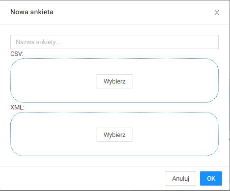
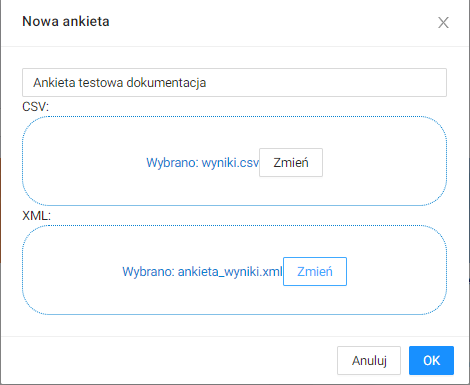

Opis interfejsu¶
Panel główny¶
Po zalogowaniu, w panelu głównym wyświetlają się ankiety oraz raporty, które są utworzone przez użytkownika lub, do których użytkownik ma uprawnienia.

Można zawęzić widok do ankiet lub raportów.


Można wyświetlić te ankiety/raporty, które są utworzone przez użytkownika.

Albo takie, które są użytkownikowi udostępnione.

Edytor ankiet¶
Dodawanie wyników z ankiety¶
W panelu głównym należy kliknąć Nowa ankieta.

Wyświetli się okno:

W oknie należy podać nazwę nowej ankiety, umieścić plik .csv z wynikami ankiety oraz plik .xml ze strukturą ankiety.

Należy kliknąć przycisk OK. Wyniki ankiety zostaną dodane i wyświetlą się w panelu głównym.